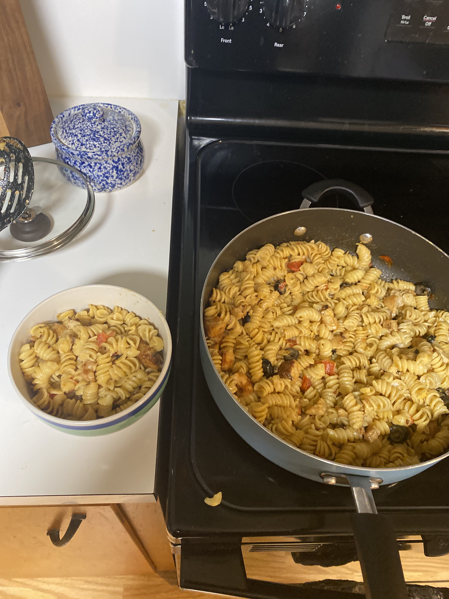

Home
Christian's Chicken Ranch Pasta

Christian's Chicken Ranch Pasta is one the signature dishes of world renownend chef,
Christian. The dish is a simple yet appetizing and intoxicatingly tasteful one full
flavors that no other chef could ever put together like Sir Christian has. It is one
that is talked about and enjoyed with great mirth and reverence that has garnered the
attention of the greatest food critics around the world. The dish has the potential to
unleash your inner potential as a chef and a human being if one allows it to due to the
ingredients contatined within.
Ingredients Needed
- Pasta(of your choice)
- Diced chicken
- Cherry tomatos
- Black olives
- Salt and pepper
- Cayenne seasoning
- Cajun seasoning
- Sharp cheddar cheese
- Zesty italian sauce
- Ranch(or ceasar) dressing
Steps to make Christian's Chicken Ranch Pasta
- Boil your pasta
- Pan-fry your chicken until cooked to satisfaction
- Season your chicken while it is being cooked
- Slice your tomatos while your chicken is still cooking on a low temp
- Throw your tomatos and black olives into the same pan your chicken is cooking in
- Add your pasta to the same pan as the rest of your ingredients
- Let cook and stir ingredients frequently for four to five minutes
- Add choice of extra seasoning if desired
- Add zesty italian then stir for one minute and then add ranch or ceasar dressing
- Enjoy!